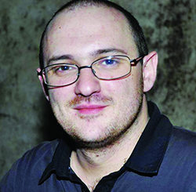

| Entry |
Title |
Description |
|
Marcus Hutchins |
The WannaCry Slayer. Marcus stopped the WannaCry virus in it's track by
looking through it's code a discovering a domain name, which he promptly registered to activate a
kill switch that shut the virus down.
|
 |
James Kettle |
James Kettle is Head of Research at PortSwigger, where he is responsible for
helping to develop Burp Suite, a popular application used to test web security.
|
|  |
Benjamin Delpy |
One of the most widely-used hacking tools currently being used by both white
and black hats is Mimikatz which was developed by Benjamin.
|